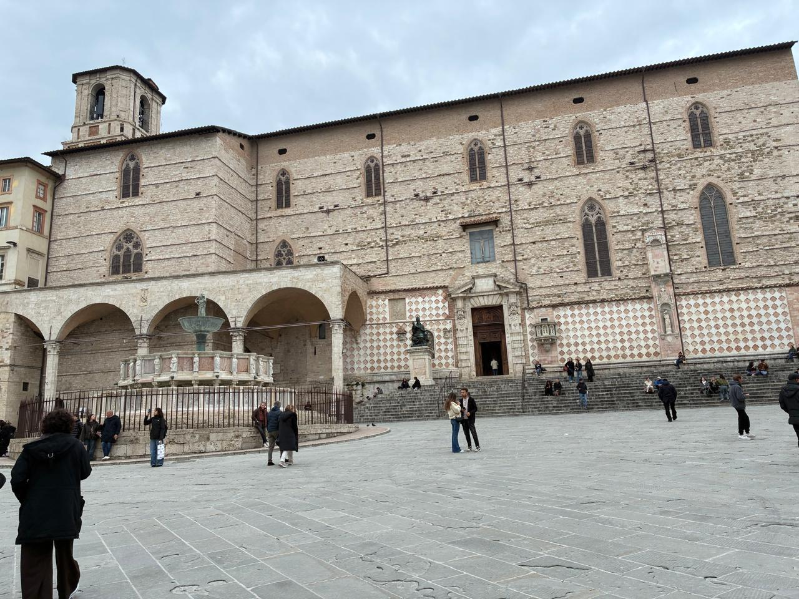
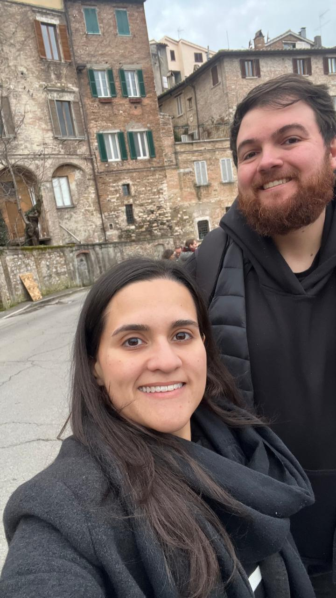
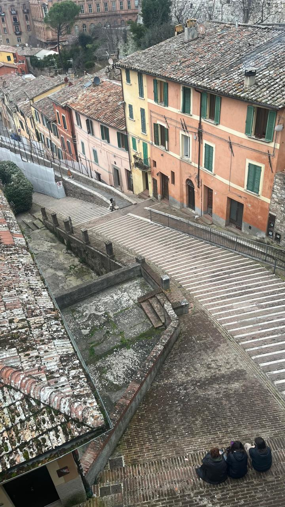
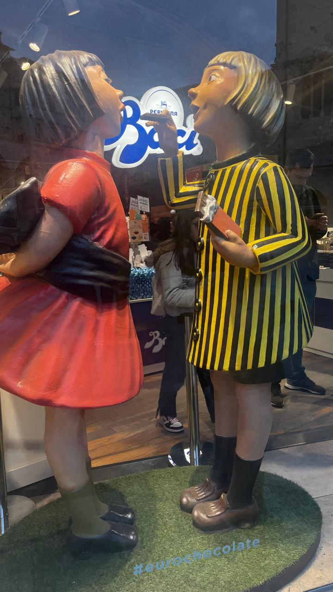
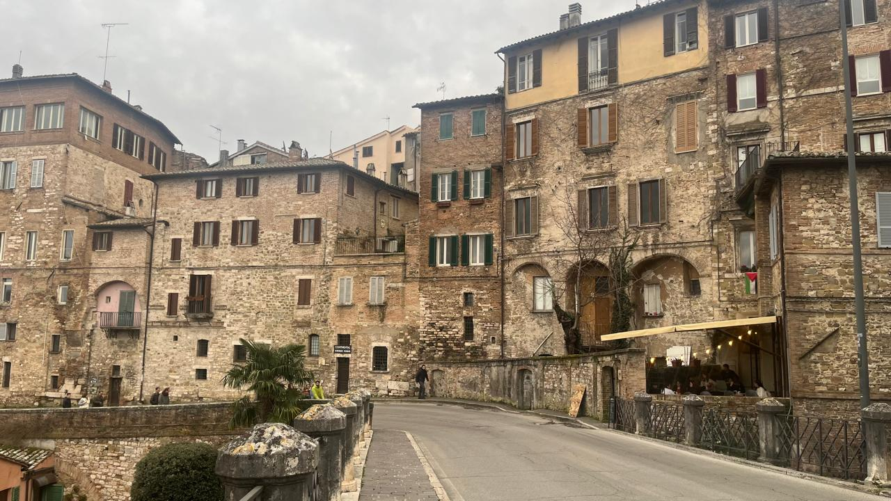
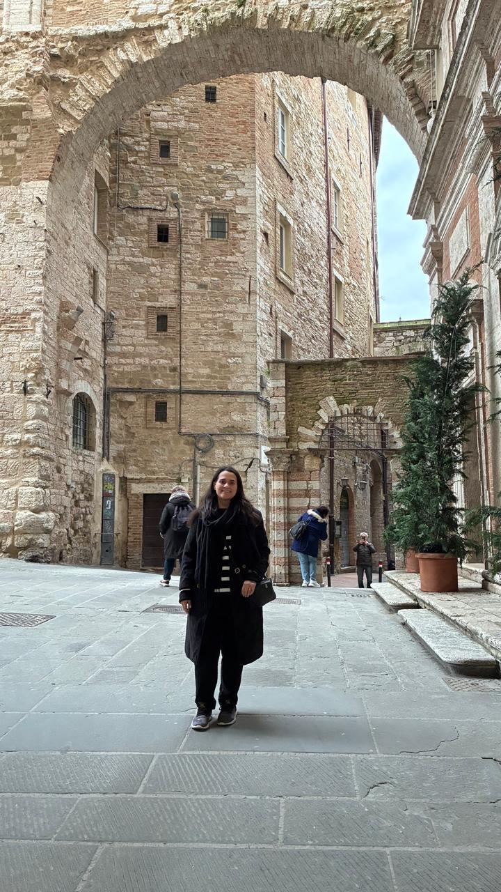

Perugia
Perugia, capital da Úmbria, é uma cidade medieval vibrante, famosa por sua universidade, arte renascentista e pelo chocolate. Suas ruas estreitas, praças históricas e vistas panorâmicas fazem dela um destino encantador e cheio de cultura.






Milão → Perugia
Saindo da Estação Central de Milão, pegue um trem de alta velocidade até Florença ou Roma. De lá, siga para Perugia.
A viagem dura cerca de 4 a 5 horas e custa em torno de 30 a 50 euros
Pontos Turísticos Imperdíveis
- Piazza IV Novembre: A praça central, com a Fonte Maggiore e a Catedral de San Lorenzo.
- Rocca Paolina: Fortaleza renascentista que guarda passagens subterrâneas fascinantes.
- Galleria Nazionale dell’Umbria: Museu com obras-primas da arte medieval e renascentista.
- Arco Etrusco: Porta monumental da antiga muralha etrusca.
Gastronomia em Perugia
- Primo piatto: Massas com trufas negras da Úmbria.
- Secondo piatto: Carne de javali e pratos rústicos típicos da região.
- Sobremesa 🍫: Baci Perugina, os famosos bombons de chocolate com recheio de avelã.
Dica dos Ussinhos 🐻💡
Perugia é perfeita para quem gosta de arte e gastronomia. Se possível, visite durante o Eurochocolate, festival dedicado ao chocolate que transforma a cidade em um paraíso doce.